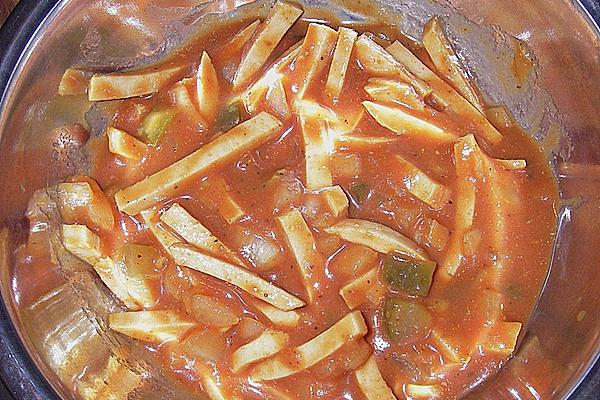

Currysalat
Home > Currysalat Recipe

Description:
German delicacy with baloney.
Ingredients:
- 1 pound baloney
- 1 glass pickled cucumber
- 1 onion
- 1 pound ketchup
- Currypowder
- Pepper
- Salt
Steps:
- Cut the baloney in stripes
- Cut some cucumbers (not all) in cubes
- Peel the onion and cut it in cubes
- Put everything in a bowl and add some water from the pickled cucumbers glass
- Add 1-2 tsp. mustard and the ketchup
- Stir and season with salt, pepper and curry powder